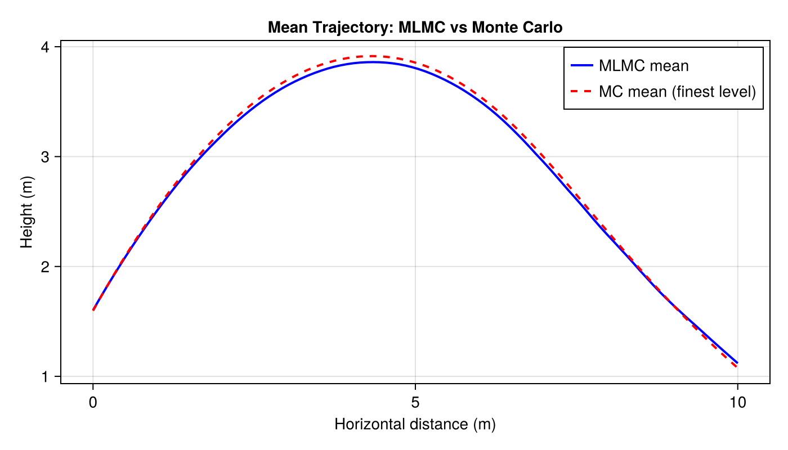

Projectile Motion
This example demonstrates MLMC estimation applied to a projectile motion model with uncertain parameters (initial height, speed, angle, mass, drag).
Problem Setup
We define a simple projectile simulation with drag and wrap it as an MLMC hierarchy by varying the time-step resolution.
using Parameters
using Random
Random.seed!(123)
@with_kw struct Drag{RhoType, CdType, AreaType}
ρ::RhoType = 1.225
C_d::CdType = 0.47
A::AreaType = 0.01
end
function (d::Drag)(v)
return 0.5 * d.ρ * d.C_d * d.A * v^2
end
@with_kw struct ProjectileParameters{HeightType, SpeedType, AngleType, MassType, DragType}
initial_height::HeightType
initial_speed::SpeedType
angle_in_degrees::AngleType
mass::MassType
drag::DragType
end
import Random: rand
function rand(p::ProjectileParameters)
ProjectileParameters(
initial_height = p.initial_height isa Real ? p.initial_height : rand(p.initial_height),
initial_speed = p.initial_speed isa Real ? p.initial_speed : rand(p.initial_speed),
angle_in_degrees = p.angle_in_degrees isa Real ? p.angle_in_degrees : rand(p.angle_in_degrees),
mass = p.mass isa Real ? p.mass : rand(p.mass),
drag = Drag(
ρ = p.drag.ρ isa Real ? p.drag.ρ : rand(p.drag.ρ),
C_d = p.drag.C_d isa Real ? p.drag.C_d : rand(p.drag.C_d),
A = p.drag.A isa Real ? p.drag.A : rand(p.drag.A),
),
)
end
function projectile_motion(p::ProjectileParameters; endtime=5.0, resolution=0.01)
g = 9.81
θ = deg2rad(p.angle_in_degrees)
vx, vy = p.initial_speed * cos(θ), p.initial_speed * sin(θ)
dt = resolution
ts = collect(0.0:dt:endtime)
xs = zeros(length(ts))
ys = zeros(length(ts))
xs[1] = 0.0
ys[1] = Float64(p.initial_height)
last_i = 1
for i in 2:length(ts)
v = sqrt(vx^2 + vy^2)
fd = p.drag(v)
vx += (-fd * vx / v / p.mass) * dt
vy += (-g - fd * vy / v / p.mass) * dt
xs[i] = xs[i-1] + vx * dt
ys[i] = ys[i-1] + vy * dt
last_i = i
ys[i] < 0 && break
end
return (x=xs[1:last_i], y=ys[1:last_i])
endDefine Uncertain Parameters
using Distributions
parameters_uncertain = ProjectileParameters(
initial_height = Uniform(1.5, 1.7),
initial_speed = Uniform(8, 12),
angle_in_degrees = Uniform(30, 60),
mass = Uniform(0.1, 0.5),
drag = Drag(ρ=Uniform(1.0, 1.5), C_d=Uniform(0.3, 0.6), A=Uniform(0.005, 0.015)),
)Define MLMC Levels and QoI Functions
The levels are the same physical model run at different time-step resolutions. The QoI functions extract scalar quantities from the model output.
using MultilevelMonteCarlo
timestepsizes = 2.0 .^ (-2:-1:-6)
levels = Function[
let dt = dt
params -> projectile_motion(params; endtime=5.0, resolution=dt)
end
for dt in timestepsizes
]
qoi_distance(output) = maximum(output.x)
qoi_max_height(output) = maximum(output.y)
qoi_functions = Function[qoi_distance, qoi_max_height]Variance Estimation and Optimal Allocation
samples_per_level = fill(1024, length(timestepsizes))
variances_corrections, variances = variance_per_level(
levels, qoi_functions, samples_per_level,
() -> rand(parameters_uncertain),
)
println("Variance of corrections: ", round.(variances_corrections, sigdigits=3))
println("Variance per level: ", round.(variances, sigdigits=3))Variance of corrections: [96.2, 27.2, 6.44, 1.75]
Variance per level: [1780.0, 1970.0, 2210.0, 2100.0, 2200.0]Compute the optimal sample allocation for a given tolerance:
tolerance = 0.1
cost_per_level = timestepsizes .^ (-1)
samples_optimal = optimal_samples_per_level(
variances_corrections, variances, cost_per_level, tolerance,
)
println("Optimal samples per level: ", samples_optimal)Optimal samples per level: [666200, 109543, 41217, 14173, 5216]MLMC Estimation (Scalar QoIs)
result = mlmc_estimate(
levels, qoi_functions, samples_per_level,
() -> rand(parameters_uncertain),
)
println("MLMC estimates: distance = ", round(result[1], digits=3),
", max height = ", round(result[2], digits=3))MLMC estimates: distance = 10.218, max height = 3.986Mean Trajectory: MLMC vs Monte Carlo
To compute the mean trajectory $E[y(x)]$, we define a vector-valued QoI that interpolates each simulated trajectory onto a common horizontal grid.
# Fixed horizontal grid for trajectory interpolation
const x_grid = collect(range(0, 10, length=100))
function interp_trajectory(x_traj, y_traj, xg)
n = length(x_traj)
result = zeros(length(xg))
for (i, xv) in enumerate(xg)
if xv <= x_traj[1]
result[i] = y_traj[1]
elseif xv >= x_traj[end]
result[i] = 0.0
else
idx = searchsortedlast(x_traj, xv)
frac = (xv - x_traj[idx]) / (x_traj[idx+1] - x_traj[idx])
result[i] = (1 - frac) * y_traj[idx] + frac * y_traj[idx+1]
end
result[i] = max(0.0, result[i])
end
return result
end
qoi_trajectory(output) = interp_trajectory(output.x, output.y, x_grid)
# MLMC mean trajectory
mlmc_traj = mlmc_estimate_vector_qoi(
levels, qoi_trajectory, samples_per_level,
() -> rand(parameters_uncertain),
)
# MC mean trajectory (same total work, finest level only)
mc_traj = evaluate_monte_carlo_vector_qoi(
2000,
() -> rand(parameters_uncertain),
levels[end],
qoi_trajectory,
)using CairoMakie
fig = Figure(size=(700, 400))
ax = Axis(fig[1, 1]; xlabel="Horizontal distance (m)", ylabel="Height (m)",
title="Mean Trajectory: MLMC vs Monte Carlo")
lines!(ax, x_grid, mlmc_traj; label="MLMC mean", color=:blue, linewidth=2)
lines!(ax, x_grid, mc_traj; label="MC mean (finest level)", color=:red,
linewidth=2, linestyle=:dash)
axislegend(ax; position=:rt)
fig
Adaptive MLMC
The adaptive variant iteratively refines sample counts to meet the target tolerance:
adaptive_result, adaptive_counts = mlmc_estimate_adaptive(
levels, qoi_functions,
() -> rand(parameters_uncertain),
cost_per_level, tolerance;
initial_samples = 100,
)
println("Adaptive MLMC: distance = ", round(adaptive_result[1], digits=3),
", max height = ", round(adaptive_result[2], digits=3))
println("Final sample counts: ", adaptive_counts)Adaptive MLMC: distance = 10.327, max height = 4.002
Final sample counts: [678022, 110030, 44091, 15250, 5348]